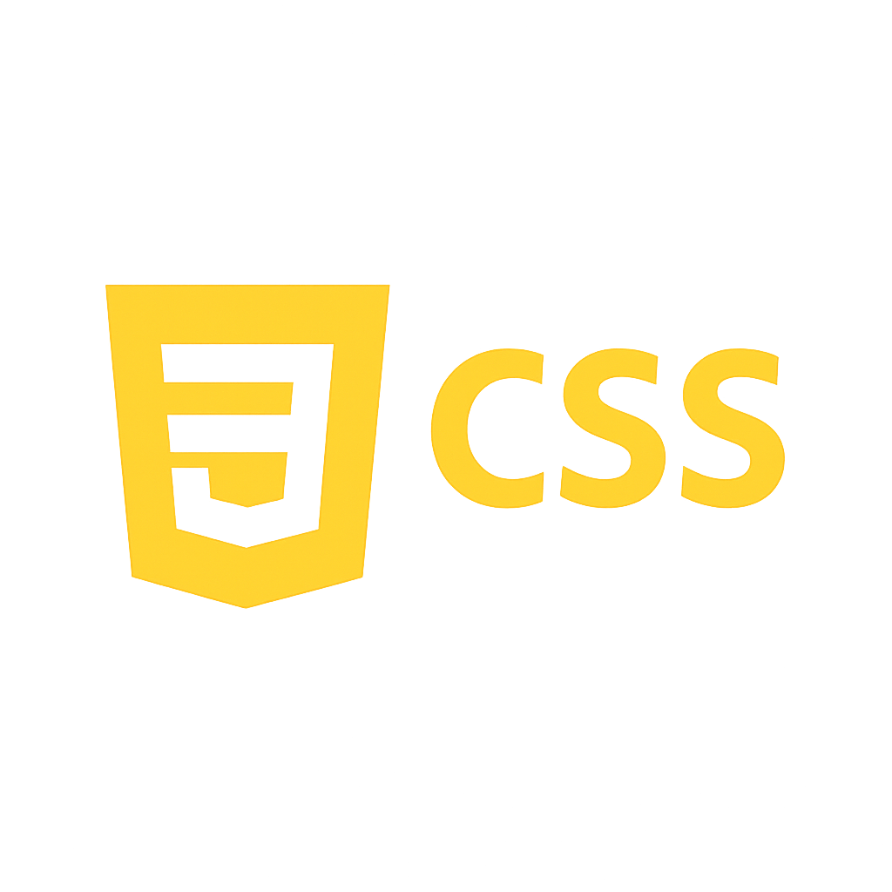
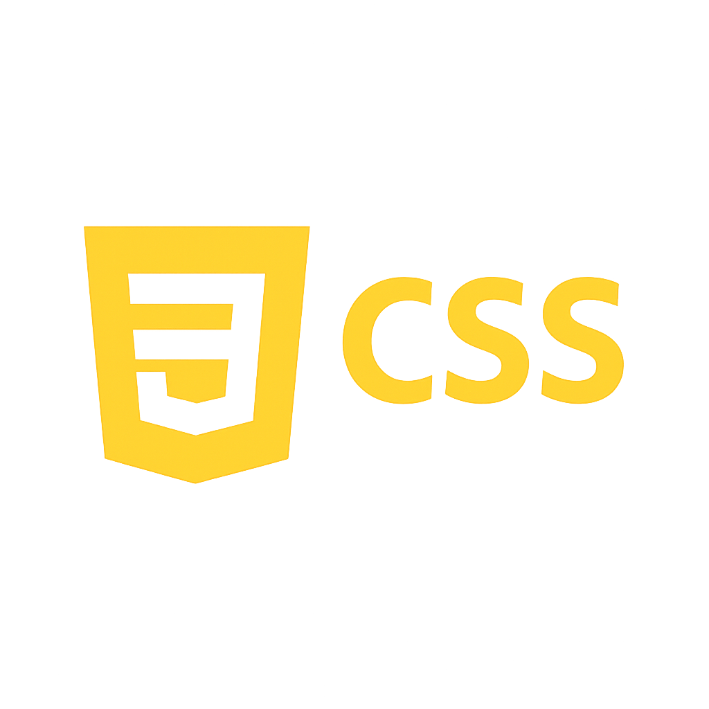

Natalia Romina Parra Poma
Analista de Datos | Power BI · SQL · Python · Automatización
Explorá mis proyectos


Sobre mí
Soy Analista de Datos con enfoque estratégico, visual y humano. Me especializo en transformar información compleja en soluciones accesibles, cálidas y accionables. A través de herramientas como Power BI, SQL y Python, desarrollo dashboards interactivos, modelos relacionales y automatizaciones que impulsan decisiones inteligentes.
Mis proyectos reflejan esta visión: desde el análisis financiero y geográfico de Adventure Works, hasta la expansión sanitaria de BIOGENESYS en Latinoamérica y la optimización operativa de FastFoodDB. Cada uno combina modelado de datos, visualización narrativa y recomendaciones estratégicas basadas en evidencia.
Además de mis habilidades técnicas, valoro profundamente la comunicación clara, la documentación profesional y la colaboración efectiva. Me apasiona crear experiencias visuales armoniosas que conecten con las personas y potencien el valor de los datos. Mi enfoque perfeccionista y didáctico me permite adaptar soluciones a distintos contextos, siempre con empatía y precisión.
Herramientas que uso
 

Habilidades blandas
Creatividad didáctica
Explico conceptos complejos de forma clara y visual.
Colaboración internacional
Trabajo en equipo con empresas de distintos países.
Atención al detalle
Cuido cada aspecto visual y técnico con precisión.
Pensamiento analítico
Resuelvo problemas con lógica y estrategia.
Comunicación clara
Documentación profesional y lenguaje accesible.
Proactividad y adaptación
Me reinvento ante nuevos desafíos con entusiasmo.
Proyectos destacados
Análisis Financiero y Geográfico con Power BI
Diseño y desarrollo de un dashboard interactivo en Power BI para visualizar el rendimiento comercial y financiero de Adventure Works entre 2010 y 2014, con foco especial en el mercado estadounidense.
- Conexión a base SQL y transformación en Power Query
- Modelado relacional optimizado para análisis temporal, geográfico y por producto
- Medidas DAX para KPIs financieros e inteligencia de tiempo
- Dashboard con patrón de lectura Z y navegación interactiva
- Mapa de calor geográfico y gráficos comparativos por año
- Hallazgos: mejores resultados en 2013, eficiencia en 2012, margen neto promedio del 31%
- Recomendaciones: análisis de perfil de cliente, revisión de estructura, expansión a nuevos mercados
Expansión Estratégica con Python
Diseño de una estrategia de expansión territorial para BIOGENESYS en Latinoamérica, utilizando análisis geoespacial, demográfico y sanitario con Python y dashboards interactivos. Se priorizan regiones con alta demanda médica y baja cobertura en Argentina, Brasil, Chile, Colombia, México y Perú.
- Lenguaje: Python con librerías NumPy, Pandas, Matplotlib y Seaborn
- Dashboards interactivos: mapas, heatmaps, pairplots, boxplots y KPIs
- Procesamiento de datos: limpieza, filtrado geográfico/temporal y análisis exploratorio
- Insights: Brasil con mayor carga sanitaria, Chile lidera en mortalidad, desigualdad de género marcada
- Dashboard geoespacial con navegación temática y visualizaciones comparativas mensuales
- Recomendaciones: expansión en Brasil/México/Argentina, vacunación pediátrica y geriátrica, centros masculinos en zonas críticas
Modelado y Gestión Estratégica de Base de Datos
FastFoodDB es una base de datos relacional diseñada en SQL para modelar y analizar las operaciones de una empresa de comida rápida. Incluye modelado, inserción de datos, consultas analíticas y recomendaciones estratégicas.
- Relaciones clave entre productos, órdenes, clientes y sucursales
- Consultas con funciones agregadas:
SUM,AVG,MIN,MAX - Descubrimientos: estacionalidad, rentabilidad por sucursal, canal online más fuerte
- Recomendaciones: precios dinámicos, fidelización digital, logística inteligente